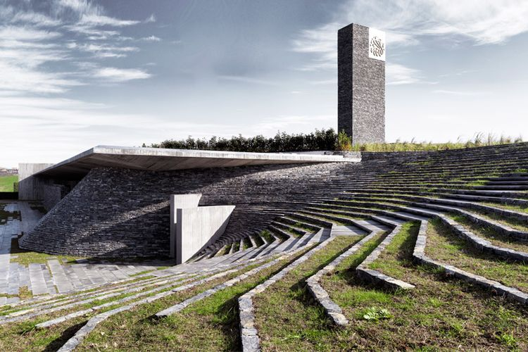
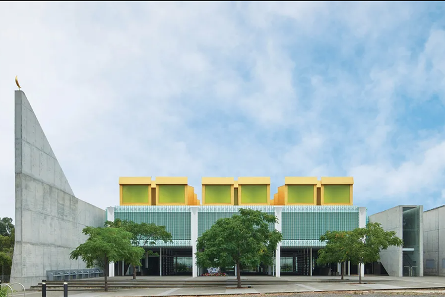

Masjid Valiasr di Kota Tehran dirancang oleh
firma Iran Fluid Motion Architects. Tidak seperti
masjid pada umumnya, desain rumah ibadah ini menantang
desain masjid tradisional karena mengeleminasi
keberadaan kubah dan menara. Baca juga: Kabar
Terbaru Renovasi Masjid Istiqlal, Tembus 71,34
Persen "Valiasr adalah kritik terhadap gagasan
struktur otoriter vertikal masjid-masjid klasik
dan mengusulkan perdamaian dan kesetaraan,"
ucap Pendiri Fluid Motion Architects Reza
Daneshmir dan Catherine Spiridonoff.
Menurut mereka, Valiasr merupakan masjid
kontemporer pertama yang didesain dengan
tata ruang berbasis horizontal. Desainnya
dianggap mampu membuka pintu bagi persepsi
kita tentang masjid dan bahkan desain lainnya
di era baru. Menurut laman The Guardian,
bangunan ini didirikan di atas lahan
seluas 3.855 meter persegi, masjid
tujuh lantai ini memiliki tinggi 32 meter.
Di dalamnya terdapat ruang shalat, pusat budaya,
tempat tinggal imam dan tempat parkir.
Pendiri Fluid Motion Architects Reza Daneshmir dan Catherine
Spiridonoff mengatakan desain masjid ini
terinspirasi oleh desain Masjid Quba di Madinah.
"Kesederhanaan adalah fitur utama masjid pertama,"
kata mereka. Desain masjid ini juga memenangi
penghargaan Middle East Architect Awards’ Cultural
Project of the Year pada tahun 2018. Para juri saat
itu memuji pendekatan proyek yang tidak konvensional
untuk arsitektur Islam. "Masjid Valiasr adalah upaya
untuk membawa struktur damai, sederhana masjid-masjid
awal ke era kontemporer. Tipologi kami menghidupkan
kembali gagasan Nabi yang terlupakan," kata Spiridonoff.
Read More

Masjid Sancaklar, Turki
Desain masjid dirancang oleh Turki Emre Arolat
Architecture. Masjid ini terletak di lingkungan
pinggiran kota di pinggiran Istanbul, Melansir laman
Middle East Architect, masjid ini pernah menyabet
penghargaan RIBA dalam kategori International Excellence
pada tahun 2018. Bangunan tersebut terletak di
tengah-tengah lanskap padang rumput. Oleh karenanya,
arsitek masjid ini menempatkan kanopi panjang yang
membentang dari taman. Baca juga: Desain Masjid
Indonesia Terkini Lebih Out of The Box Kanopi tersebut
menjadi satu-satunya elemen bangunan yang terlihat
dari luar. "Masjid Sancaklar bertujuan untuk mengatasi
masalah mendasar dalam merancang masjid dengan
menjauhkan diri dari diskusi arsitektur, yang saat ini
berdasarkan pada bentuk dan berfokus hanya pada esensi
ruang keagamaan," kata para arsitek seperti dikutip
dari laman Dezeen. Keseluruhan gedung terletak di
bawah elemen kanopi dan hanya bisa diakses melalui
jalan setapak dari halaman atas melalui taman. Jika
dilihat dari luar, rumah ibadah ini tampak seperti
menyatu dengan lanskap. Meski tertutup kanopi,
namun hal ini tidak menjadi masalah bagi pencahayaan
masjid. Cahaya matahari langsung tetap bisa masuk
melalui cehlah-celah di atas ruangan. Keunikan lainnya
adalah penggunaan material antar abeton dan batu-batuan
berwarna abu-abu. Potongan-potongan batu diatur
sedemikian rupa sehingga membentuk bidang miring.
Bangunan itu menyatu sepenuhnya dengan topografi dan
dunia luar tertinggal ketika seseorang bergerak melalui
lanskap, menuruni bukit dan di antara dinding untuk
memasuki masjid.
Read More

Australian Islamic Centre, Australia
Desain masjid dirancang oleh Turki Emre Arolat
Architecture. Masjid ini terletak di lingkungan
pinggiran kota di pinggiran Istanbul, Melansir
laman Middle East Architect, masjid ini pernah
menyabet penghargaan RIBA dalam kategori International
Excellence pada tahun 2018. Bangunan tersebut terletak
di tengah-tengah lanskap padang rumput. Oleh karenanya,
arsitek masjid ini menempatkan kanopi panjang yang
membentang dari taman. Baca juga: Desain Masjid Indonesia
Terkini Lebih Out of The Box Kanopi tersebut menjadi
satu-satunya elemen bangunan yang terlihat dari luar.
"Masjid Sancaklar bertujuan untuk mengatasi masalah
mendasar dalam merancang masjid dengan menjauhkan diri
dari diskusi arsitektur, yang saat ini berdasarkan pada
bentuk dan berfokus hanya pada esensi ruang keagamaan,
"kata para arsitek seperti dikutip dari laman Dezeen.
Keseluruhan gedung terletak di bawah elemen kanopi dan
hanya bisa diakses melalui jalan setapak dari halaman
atas melalui taman. Jika dilihat dari luar, rumah ibadah
ini tampak seperti menyatu dengan lanskap. Meski tertutup
kanopi, namun hal ini tidak menjadi masalah bagi
pencahayaan masjid. Cahaya matahari langsung tetap bisa
masuk melalui cehlah-celah di atas ruangan. Keunikan
lainnya adalah penggunaan material antar abeton dan
batu-batuan berwarna abu-abu. Potongan-potongan batu
diatur sedemikian rupa sehingga membentuk bidang miring.
Bangunan itu menyatu sepenuhnya dengan topografi dan
dunia luar tertinggal ketika seseorang bergerak melalui
lanskap, menuruni bukit dan di antara dinding untuk memasuki masjid.
Read More